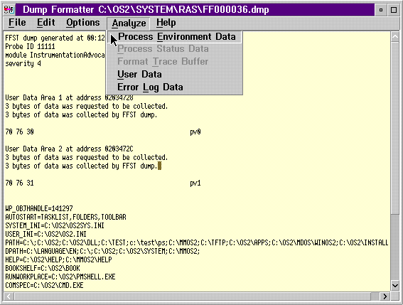

FFST Dump Analyze Option
The Analyze options for formatting FFST dumps are:
- Process environment data
- Process status data
- Format trace buffer
- Format process dump
- User data
- Error log data
AnalyzeMenu - BarChoicesforaFFSTDump

[Back: Analyzing a FFST Dump]
[Next: Process Environment Data]